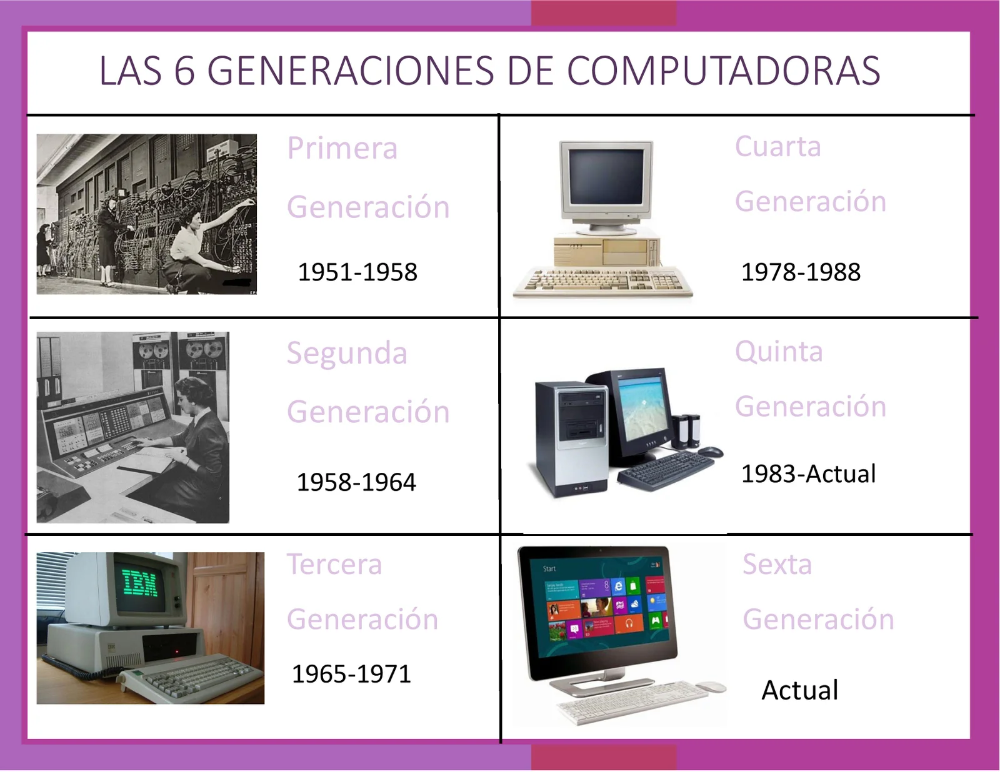

Sitio Informativo: Índice Principal
Inicio
Generaciones de Computadoras
Primera Generación
Segunda Generación
Tercera Generación
Redes Sociales y Tipos de Redes
Intranet y Extranet
Web 2.0 y Web 3.0
Problemas Comunes de Internet
Antivirus
Bibliografía
Bienvenido al Sitio Informativo
Este es el índice principal. Utiliza el menú de navegación para explorar las diferentes secciones.
Temas:
Generaciones de Computadoras (Primera a Sexta)
Detalle de la primera generación
Detalle de la segunda generación
Detalle de la tercera generación
Redes sociales y tipos de redes
Intranet y Extranet
Web 2.0 y Web 3.0
Problemas comunes al usar internet
Qué es un antivirus y tipos comunes
Fuentes utilizadas
